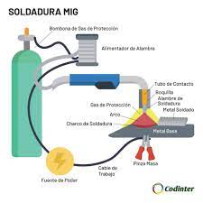
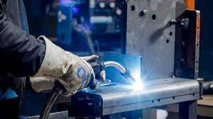
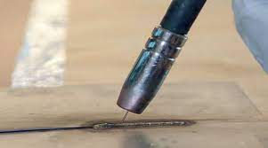
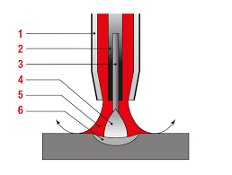
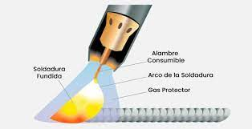

Soldadura MIG
La soldadura MIG (Metal Inert Gas) es otro método de soldadura por arco. Al igual que la
soldadura TIG, se utiliza un gas inerte como gas de protección, pero la soldadura MIG es un tipo de
soldadura con electrodos consumibles que utiliza un electrodo de descarga que se funde durante la soldadura.
Este proceso se utiliza generalmente para unir piezas de acero inoxidable o aleaciones de aluminio.
Se debe utilizar un tipo de gas de protección apropiado en función del metal que se vaya a soldar.
Para el electrodo se utiliza un alambre de soldadura enrollado. El hilo enrollado se enlaza a la unidad de alimentación del hilo y se envía automáticamente a la punta de la antorcha mediante un rodillo de alimentación que es accionado por un motor eléctrico. El alambre se energiza cuando pasa a través de la punta de contacto. Se produce un arco entre el hilo y el material base, que funde el hilo y el material base simultáneamente para soldarlos. Durante el proceso, el gas de protección se suministra a través de una boquilla en
el área de soldadura y sus alrededores para proteger el arco y el baño de soldadura de la atmósfera.
Una máquina de soldadura MIG semiautomática se compone principalmente de lo siguiente:
- Fuente de alimentación de soldadura
- Unidad de alimentación de alambre
- Soplete de soldadura
- Cilindro de gas
La configuración es casi la misma que la de una máquina de soldadura MAG, excepto por algunas mejoras añadidas a la unidad de alimentación de hilo. Dado que la soldadura MIG se utiliza a menudo para soldar aluminio, la unidad de alimentación de hilo debe mejorarse para permitir
una alimentación estable del alambre de aluminio blando (sistema de cuatro rodillos).
La soldadura MIG de arco corto es un método de soldadura que utiliza el fenómeno de transferencia de cortocircuito (arco corto). Se suele utilizar en sistemas semiautomáticos destinados a placas delgadas debido al bajo aporte de calor al material base. La soldadura MAG con arco corto se suele utilizar para soldar placas de grosor medio en posiciones forzadas. En el caso de la soldadura MIG, estas piezas suelen soldarse con soldadura MIG por pulsos.
La soldadura MIG por pulverización es un proceso que establece la corriente de soldadura más alta que la corriente crítica para establecer un voltaje de arco más alto. Utiliza el fenómeno de transferencia por pulverización en el que el material de aportación fundido se vaporiza. Cuando se suelda una pieza de trabajo de aluminio de manera que no se generen salpicaduras, puede producirse una falta de fusión u otros defectos de soldadura. Para evitar este problema, debe reducirse un poco el voltaje del arco para poder soldar en modo de transferencia de transferencia de pulverización pequeña. La soldadura MIG por pulverización ya no se utiliza comúnmente porque la soldadura MIG por pulsos que puede manejar piezas de trabajo con un grosor de bajo a medio se ha vuelto común.
La soldadura MIG de alta corriente utiliza alambres de soldadura con diámetros gruesos (aprox. 3.2 a 5.6 mm (0.13" a 0.22")). El sistema de soldadura incluye una antorcha de soldadura con boquilla de gas de doble protección y una fuente de alimentación de corriente constante con una corriente de salida nominal de aproximadamente 1000 A.
La soldadura MIG con CD y pulsada también se denomina soldadura MIG pulsada convencional.
El principio básico es el mismo que el de la soldadura MAG pulsada.
Este método de soldadura hace pasar una pequeña corriente de base para mantener un arco y una corriente pulsada que supera la corriente crítica alternativamente para permitir que las gotas de pulverización se transfieran desde el hilo incluso cuando la corriente media desciende por debajo de la corriente crítica. Garantizan una soldadura eficaz y de alta calidad de placas delgadas a gruesas.
La soldadura MIG por pulsos superpuestos de baja frecuencia es un método desarrollado sobre la base de la soldadura MIG por pulsos para lograr una soldadura de alto valor añadido de las piezas de aluminio. Dado que el proceso puede crear hermosos cordones en forma de escamas, se utiliza para soldar placas delgadas de aluminio para automóviles o motocicletas.